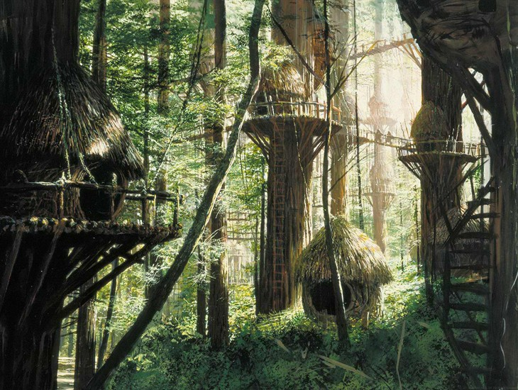
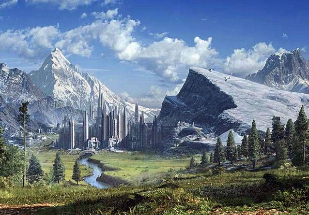
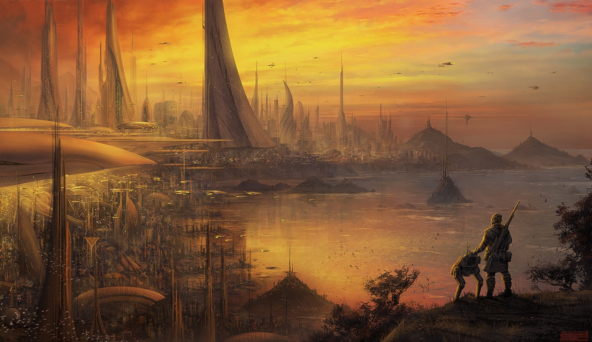
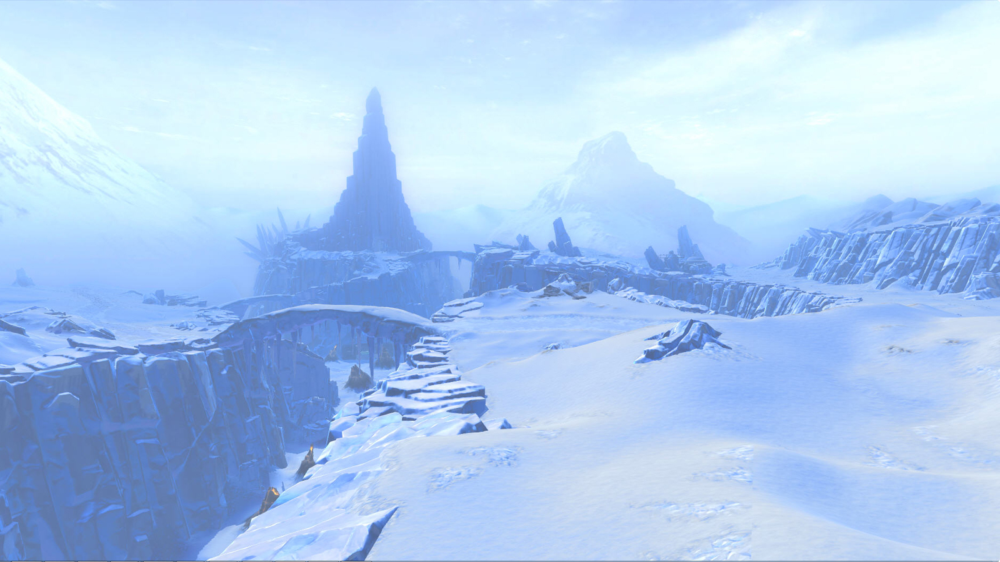
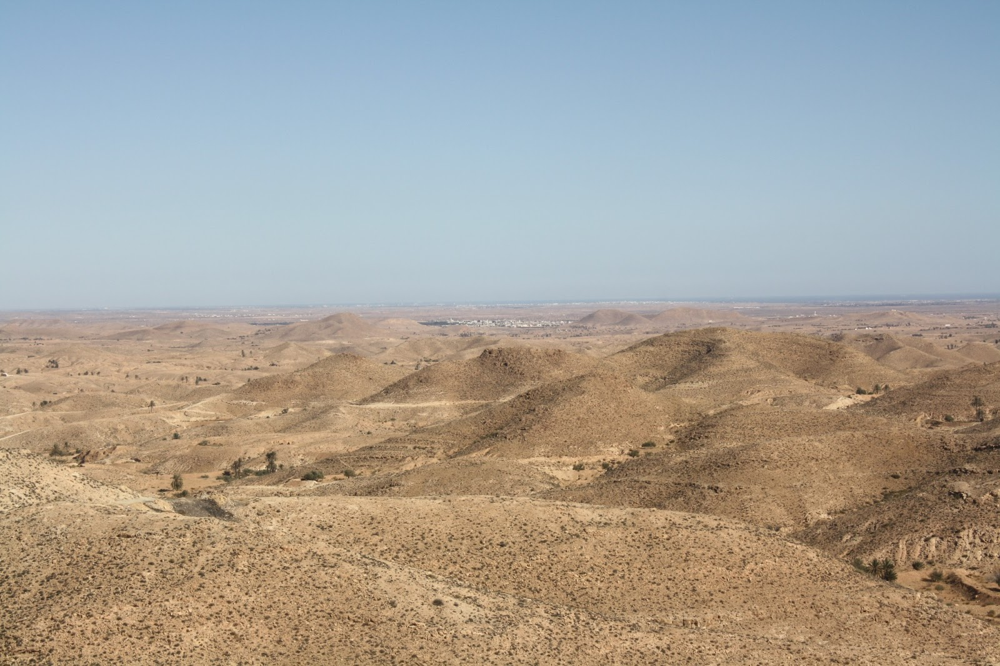
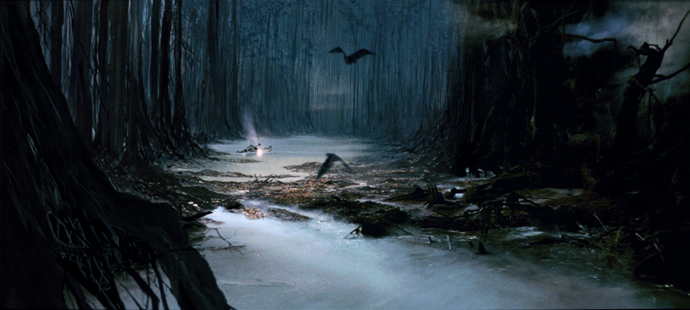

Your perfect vacation destination is
Endor!

Endor, also known as the Forest Moon of Endor, is a small forested moon located in the Outer Rim Territories and the homeworld of the Ewok species. Enjoy your luxorious stay in tree houses!
Your perfect vacation destination is
Alderaan!

Alderaan, located in the Core Worlds, was a terrestrial planet covered with mountains. Your stay here would have been amazing, however, travel to this beauty is currently unavailable.
Your perfect vacation destination is
Corellia!

Corellia is located in the Core Worlds. It was known for its ace pilots and large starships. Vessels such as the Millennium Falcon and Imperial starships were built on Corellia. If you're lucky, you might just run into a resistance hide out.
Your perfect vacation destination is
Hoth!

Hoth is a remote, icy planet that was the sixth planet in the star system of the same name. It notably hosted Echo Base, the temporary headquarters of the Alliance to Restore the Republic, until the Galactic Empire located the Rebels. And boasts some of the best masseuses in the region.
Your perfect vacation destination is
Naboo!

Naboo is a bountiful planet in the Mid Rim, close to the border of the Outer Rim Territories. It was home to the Gungan species and to a population of humans known as the Naboo. Great wines and hotel resorts, as well.
Your perfect vacation destination is
Tatooine!

Tatooine is a desert planet located in the Outer Rim Territories. Due to the lack of surface water, many residents of the planet instead drew water from the atmosphere via moisture farms. Moisture isn't the only thing this planet farms, its grapes produce surprisingly tasty vinos.
Your perfect vacation destination is
Dagobah!

Dagobah is a remote world of swamps and forests, that served as a refuge for Jedi Grand Master Yoda during his exile after the destruction of the Jedi Order. Let planet be your refuge from all the stresses of your everyday life.
Your perfect vacation destination is
Yavin 4!
Yavin 4 was the jungle-covered fourth moon in orbit around the red gas giant Yavin. At some point during the Galactic Civil War, it hosted the headquarters of the Alliance to Restore the Republic, and is a favorite vacation spot among locals.